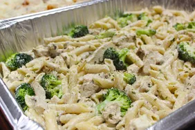

Chicken Alfredo

Description
Chicken Alfredo with Broccoli is a delicious and creamy pasta dish.
Features tender pieces of chicken breast and fresh broccoli florets, all coated in a rich Alfredo sauce made from butter, heavy cream, and Parmesan cheese.
The combination of savory chicken, crisp-tender broccoli, and velvety sauce over fettuccine or other pasta makes for a satisfying and comforting meal.
It's often garnished with additional Parmesan and freshly ground black pepper for extra flavor.
Ingredients
- 1 Packages of Penne Pasta
- 1/2 cup of butter
- 2 teaspoons minced garlic
- 1(8 ounce) package cream cheese, softened
- 2 cups milk
- 6 ounces grated Parmesan cheese, divided
- 2 teaspoons dried parsley
- 1 teaspoon Italian seasoning
- 1 teaspoon salt, divided
- 1/2 teaspoon ground black pepper
- 1 teaspoon olive oil
- 2 chicken breasts, patted dry
- 1/2 teaspoon garlic powder
Directions
- Bring a large pot of lightly salted water to a boil; add penne and cook, stirring occasionally, until tender yet firm to the bite, about 11 minutes. Drain
- Melt butter in a large saucepan over medium-high heat. Add minced garlic; saute until golden, about 30 seconds. Stir in cream cheese until smooth. Add milk; stir until there are no lumps. Lower heat to medium. Add 3/4 of the Parmesan cheese, parsley, Italian seasoning, 1/2 teaspoon salt, and black pepper. Simmer, stirring occasionally, until sauce is smooth, about 5 minutes. Remove from heat.
- Heat olive oil in a large skillet over low heat. Season chicken with 1/2 teaspoon salt and garlic powder on both sides. Cook chicken breasts until no longer pink in the center and an instant-read thermometer inserted into the center reads at least 165 degrees F (74 degrees C), about 6 minutes per side. Cut chicken into 1/2-inch cubes.
- Preheat oven to 375 degrees F (190 degrees C).
- Butter bottom and sides of a 9x13-inch casserole dish. Cover bottom with a layer of pasta. Place half of the chicken cubes on top. Pour 1/2 of the sauce over the chicken. Repeat layering pasta, chicken, and sauce. Sprinkle top with remaining Parmesan cheese. Cover with aluminum foil.
- Bake in the preheated oven until sauce is bubbly, about 15 minutes. Remove aluminum foil and bake until cheese is golden, about 5 minutes more.